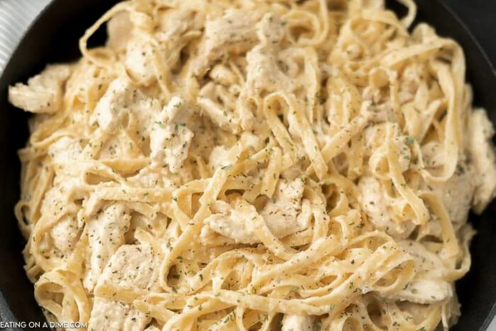

Chicken Alfredo Recipe

Description
Hello, this recipe will show you how to make the best chicken alfredo pasta ever!
Ingredients
- Chicken Breasts
- Fettuccine or any pasta of your choosing!
- Butter
- Minced Garlic
- Rosemary
- Whipping Cream or Half and Half
- Grated Parmesean Cheese
- Salt
- Pepper
- Italian Seasoning
- Onion Powder
- Seasoned Salt
- Garlic Powder
- Paprika
Steps
- Heat pasta water. Add salt for flavoring, once water is boiling add pasta and cook for 10 minutes or til
your liking!
- Place 1 tbsp of butter in a large skillet over medium heat
- Begin cooking chicken breasts. Season to taste, I like to add onion powder, garlic powder, paprika, seasoned
salt, pepper, and italian seasoning. Saute the chicken in the butter til it is golden brown on both sides.
- Once chicken is golden brown, add butter, rosemary, and minced garlic onto the pan with the chicken and base
it to get a very flavorful chicken. Once the chicken is done, remove and place into tin foil to rest.
- Now, add the whipping cream or half and half onto the pan and whisk it for 3 minutes. Once done, add in the
parmesean cheese. Whisk thouroughly
- Once done mixing, add in the pasta. Add italian seasoning and more cheese if you would like.
- Enjoy!